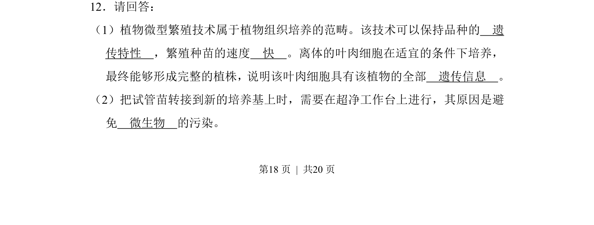
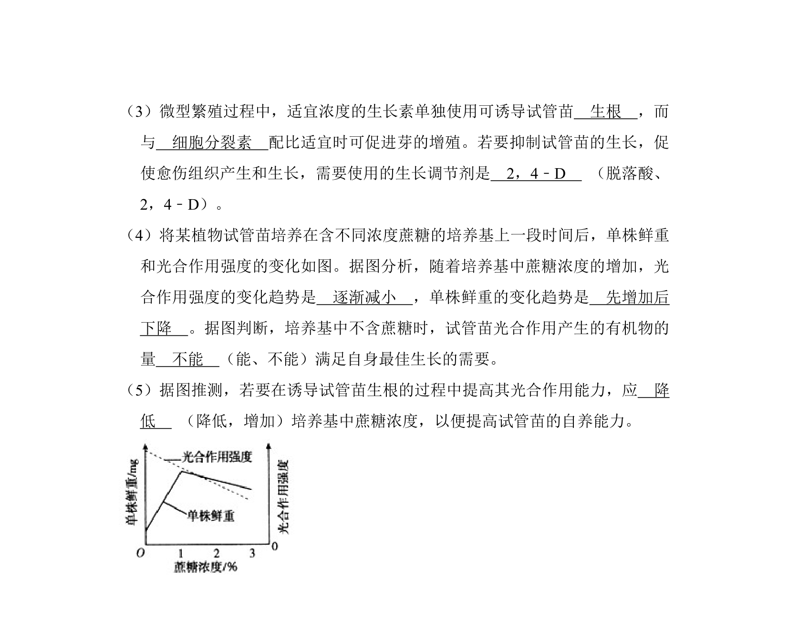
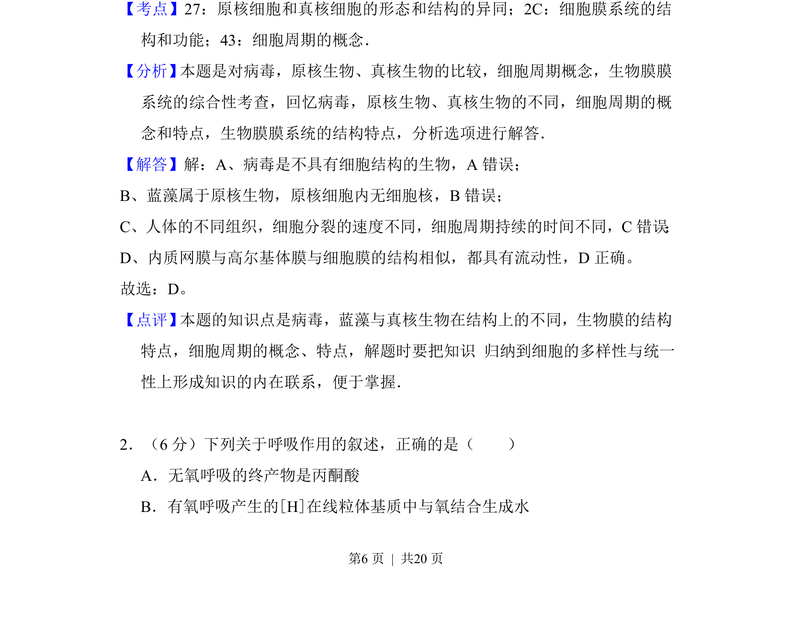
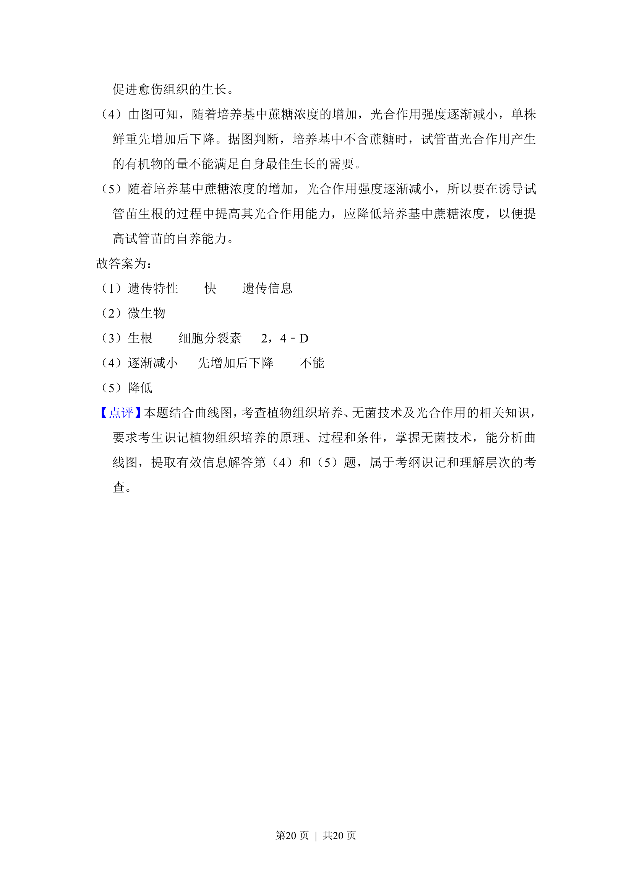

考点：植物组织培养 微型繁殖 光合作用 植物生长调节剂


考查植物微型繁殖原理、操作条件、激素调节及蔗糖浓度对光合作用与生长的影响


📄 原 PDF 第 18 页：
素材/真题/吉林/2008-2024·（吉林）生物高考真题/2010年高考生物试卷（新课标）（解析卷）.pdf
12．请回答： （1）植物微型繁殖技术属于植物组织培养的范畴。该技术可以保持品种的 遗 传特性 ，繁殖种苗的速度 快 。离体的叶肉细胞在适宜的条件下培养， 最终能够形成完整的植株，说明该叶肉细胞具有该植物的全部 遗传信息 。 （2）把试管苗转接到新的培养基上时，需要在超净工作台上进行，其原因是避 免 微生物 的污染。